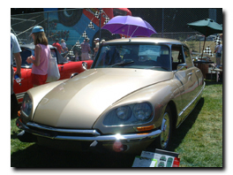
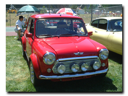
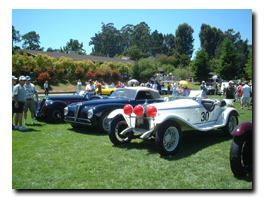
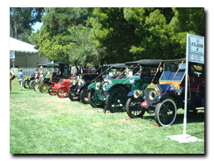
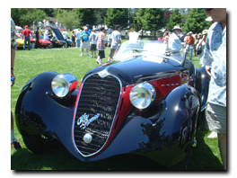
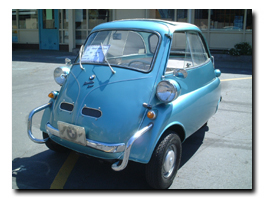
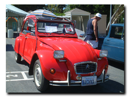
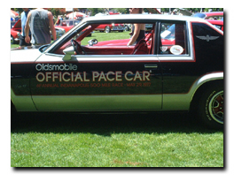
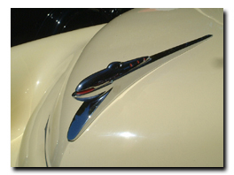
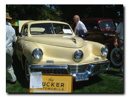

..*..*.. 2004年5月23日(日) くもり ..*..*..
5月2日は、家から45分くらいのヒルズボローという場所で開かれた車の展示会に行ってきました。夫の好きなシトロエンを、やはりシトロエン好きのJackさんが展示したので誘ってくださったのです。
またまた美しい車がたくさんあり、天候も気持ちよく、楽しい１日でした。
|  |  | | JackさんのシトロエンDS | オリジナルのミニも展示されてました |
| |  |  |
| |  |  |
| |  |  | ルパン『カリオストロの城』で
クラリスの乗ったシトロエン2CV | 1977.5.29のインディ500で使われたペースカー |
| |  |  | この形が面白いので写真を撮っていたら
審査員のおじさんが「とてもめずらしい車だ」
と言っていました | タッカーだって。
世界に数十台しかないそう |
|
私がこういう展示会が好きなのは、展示される車はみんなピカピカで、車を愛する人の気持ちが伝わってくるからです。年齢も出身もぜんぜん違う人たちが、車を通して交流しているのも好きです。
車そのものの技術的なことはあまり理解できないんだけど、その車が出来上がった歴史や時代背景や、人の動きなど、奥が深くて、いろんな視点から見るることができるところが、私は好きです。
|